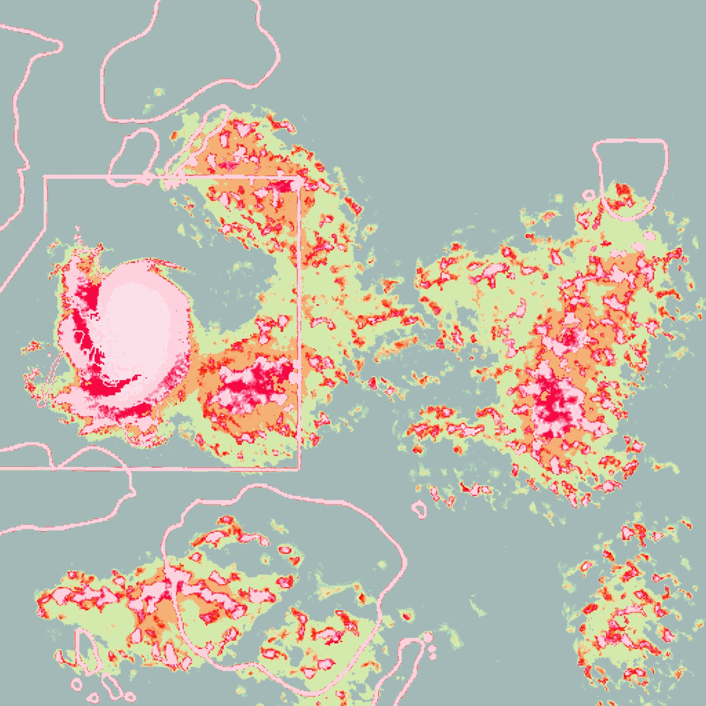
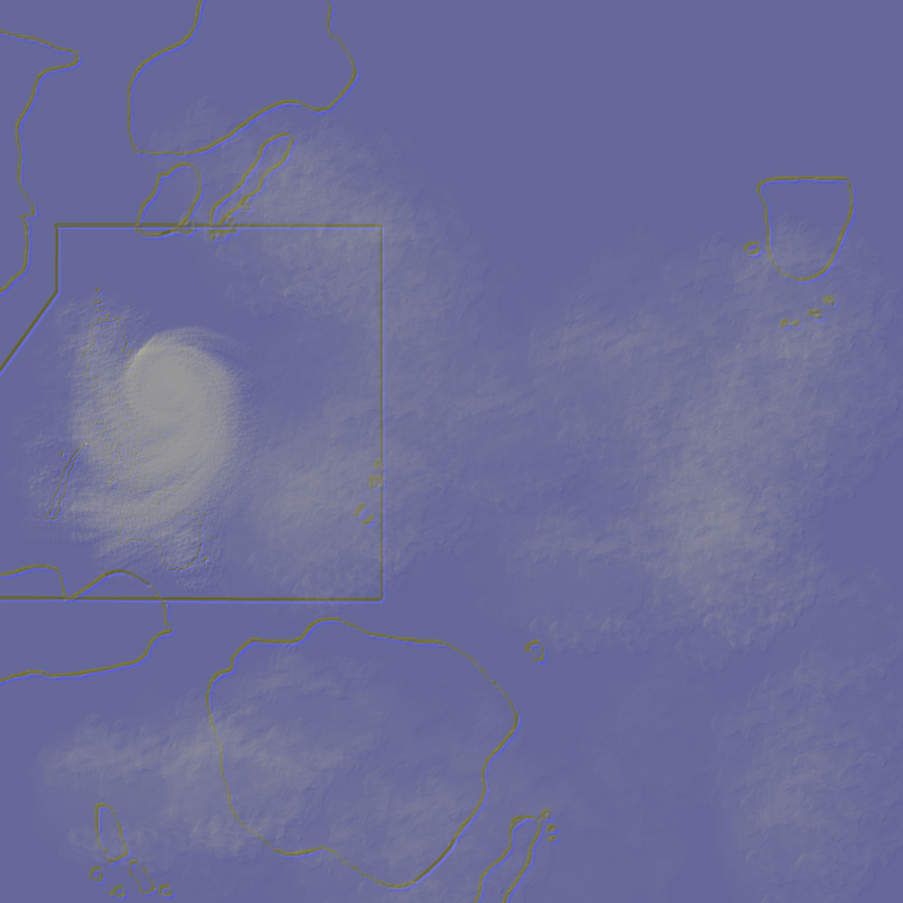

Images
_20240609064240.png)



For: Tropical Storm “EREL” {APUS}
Issued at: 02:00 PM, 24 July 2027, Saturday
Valid for broadcast until the next tropical cyclone bulletin to be issued at 05:00 PM today.
EREL MAINTAIN ITS STRENGTH AS IT ENTERS SANDY STRAIT
→ Location of Center (01:00 PM):
→ Intensity (per 1 min. sustained winds):
→ Rain accumulation:
→ Present Movement:
→ Extent of Tropical Cyclone Winds:
| WIND SIGNAL | L-Colorful | V-Colorful | M-Colorful |
|---|---|---|---|
| WIND SIGNAL NO. 2 | Eastern portion of Avocado (Gold City, Carrot, Apricot, Safari, Orange City), Washington Island, Flash Island, Spert Island, eastern portion of Banana (Tan City, Goldenrod City, Lime City), Sandy Island | - | - |
|
Warning lead time: 24 hours
Range of wind speeds: 62 to 88 km/h (Hanfort 8 to 9) Potential impacts of winds: Minor to moderate threat to life and property |
|||
| WIND SIGNAL NO. 1 | The rest of Banana, the rest of Avocado, Black Current, Apricot, easternmost portion of Blue Jade (Grift City), eastern portion of Bilp (Raise City, Sweet, Tan, Change, Oceanside, Productivity, Cold, Fall), eastern portion of Jelt (Claim, Is, Mode, Knight, Cheese, Out City, Drop, King, Blueberry, Did, Dayum), Marine Island | Cranberry, northeastern portion of Cherry (Row, Coral Blue City, East Way City), northeastern portion of Blackberry (Exo City, Rhyme, Lane) | - |
|
Warning lead time: 36 hours
Range of wind speeds: 39 to 61 km/h (Hanfort 6 to 7) Potential impacts of winds: Minimal to minor threat to life and property |
|||
HAZARD AFFECTING LAND AREAS:
Forecast accumulated rainfall:
Today to tomorrow afternoon:
• Greater than 200 mm: Sandy Island
• 100-200 mm: Flash Island, Washington Island, eastern portion of Banana, eastern portion of Jelt, Marine Island, northeastern
portion of Bilp, eastern portion of Avocado, and northern and northeastern portion of Cranberry
• 50-100 mm: Central portion of Cranberry, northern and eastern portion of Custard Apple, northeastern portion of Cherry, eastern
portion of Black Current, the rest of Avocado, the rest of Banana, eastern portion of Bilp, and central portion of Jelt
• 25-50 mm: The rest of Jelt, eastern portion of Barp, central portion of Bilp, southeastern portion of Blue Jade, Avocado, Apricot, the rest of Cranberry, the rest of Custard Apple, and northern and northeastern portion of Cherry
•Forecast accumulated rainfall:
Tomorrow morning to Monday afternoon:
• 50-100 mm: Eastern portion of Tender, eastern portion of Bark, eastern portion of Sharp, Marine Island, and northeastern
portion of Jelt
• 25-50 mm: The rest of Tender, the rest of Bark, the rest of Sharp, the rest of Jelt, eastern portion of Bilp, northern portion of
Banana, and northern portion of Avocado
In addition, EREL may also enhance the Southwest Monsoon and bring occasional to monsoon rains over several areas of the country
in the next three days. For more information, refer to Weather Advisory No. 05 for Southwest Monsoon issued at 11:00 AM today.
Precipitation may be evident in the central section of the country, albeit with intermittent or occasional significance. It is imperative for
all stakeholders to diligently observe both the precipitation and the comprehensive advisories pertaining to heavy rainfall, as well as the
potential hazards and risks it may engender, disseminated by the esteemed divisions of CMAA.
Forecast rainfall are generally higher in elevated or mountainous areas. Under these conditions, flooding and rain-induced landslides are
possible, especially in areas that are highly or very highly susceptible to these hazard as identified in hazard maps and in localities that
experienced considerable amounts of rainfall for the past several days.
Severe Winds:
The wind signals warn the public of the general wind threat over an area due to the tropical cyclone. Local winds may be slightly stronger/enhanced in coastal and upland/mountainous areas exposed to winds. Winds are less strong in areas sheltered from the prevailing wind direction.
Minor to moderate impacts from gale-force winds are also possible within any of the areas under Wind Signal No. 2.
Minimal to minor impacts from strong winds are possible within any of the areas under Wind Signal No. 1.
EREL and the enhanced southwest monsoon will continue to bring gusty conditions over the following areas not under any Wind Signal, especially in coastal or upland/mountainous areas exposed to winds:
TODAY through TOMORROW: Aquamarine Island, V-Colorful, and Light Pink Region
MONDAY: Sky Blue Region and V-Colorful
HAZARD AFFECTING COASTAL WATERS:
TODAY: EREL will bring rough to very rough seas (4.25 to 6.0 m) over the coastal waters along the seaboards of eastern Banana, eastern Avocado, Sandy Island, Flash Island, Spert Island, and Washington Island. Rough seas (4.0 to 4.5 m) over Banana and the rest
of Avocado, and Armstrong Island. Moderate to rough seas (2.75 to 4.0 m) along the seabaord of Black Current and Cranberry.
Mariners of motor bancas and similarly- sized vessels are advised to take precautionary measures while venturing out to sea and, if
possible, avoid navigating in these conditions, especially if inexperienced or operating ill-equipped vessels.
COASTAL INUNDATION:
There is a high-risk of storm surge of up to 1.0 m in height which may cause flooding in the low-lying and exposed coastal areas of
Sandy Island, Flash Island, Washington Island, Armstrong Island, Spert Island, Fundle, Avocado, Black Current, Banana, and northern
Cranberry. For more information, refer to Storm Surge Warning No. 01 issued at 11:00 AM today.
TRACK AND INTENSITY OUTLOOK:
Considering these developments, the public and disaster risk reduction and management offices concerned are advised to take all
necessary measures to protect life and property. Persons living in areas identified to be highly or very highly susceptible to these hazards
are advised to follow evacuation and other instructions from local officials. For heavy rainfall warnings, thunderstorm/rainfall advisories, and other severe weather information specific to your area, please monitor products issued by your local CMAA Regional Services Division.
The next tropical cyclone bulletin will be issued at 05:00 PM today.
| Date | Location | Intensity (km/h) |
Category | Speed Movement and Direction (km/h) |
12-Hour Forecast 02:00 AM 25 July 2027 | 158 km east southeast of Marine Island, Jelt | 80 | TS | NNW 20 | 24-Hour Forecast 02:00 PM 25 July 2027 | 289 km east southeast of Seaside City, Tender | 80 | TS | N 16 | 36-Hour Forecast 02:00 AM 26 July 2027 | 534 km east northeast Bookers City, Tender | 80 | TS | NNE 19 | 48-Hour Forecast 02:00 PM 26 July 2027 | 779 km northeast of Bookers City, Tender | 95 | STS | NE 19 | 60-Hour Forecast 02:00 AM 27 July 2027 | 929 km northeast of Bookers City, Tender | 85 | STS | NE 19 | 72-Hour Forecast 02:00 PM 27 July 2027 | 1,047 km northeast of Extreme L-Colorful
(OUTSIDE CAR) |
85 | STS | NE 20 | 96-Hour Forecast 02:00 PM 28 July 2027 | 1,329 northeast of Extreme L-Colorful
(OUTSIDE CAR) |
75 | TS | ENE 32 | 120-Hour Forecast 02:00 PM 29 July 2027 | 1,528 km northeast of Extreme L-Colorful
(OUTSIDE CAR) |
65 | TS | ENE 39 |
|---|